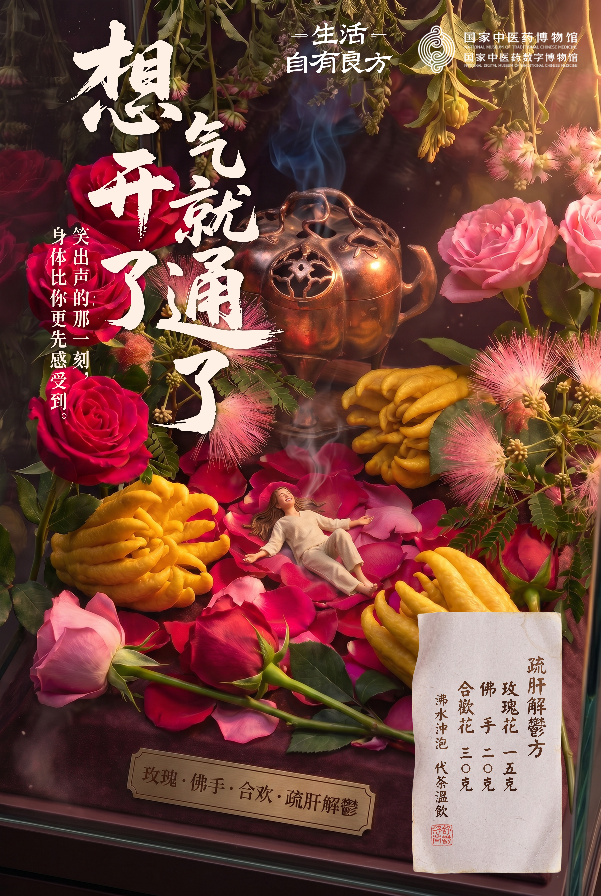
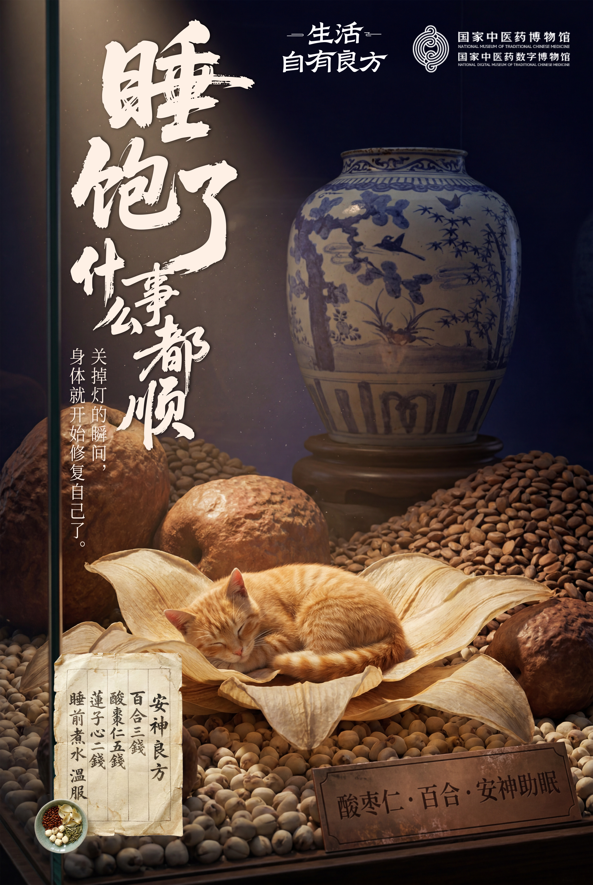
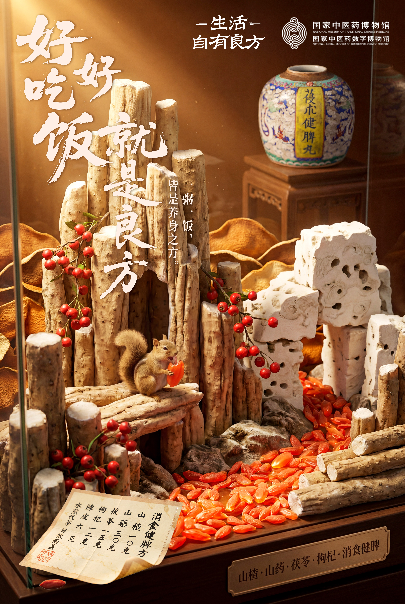
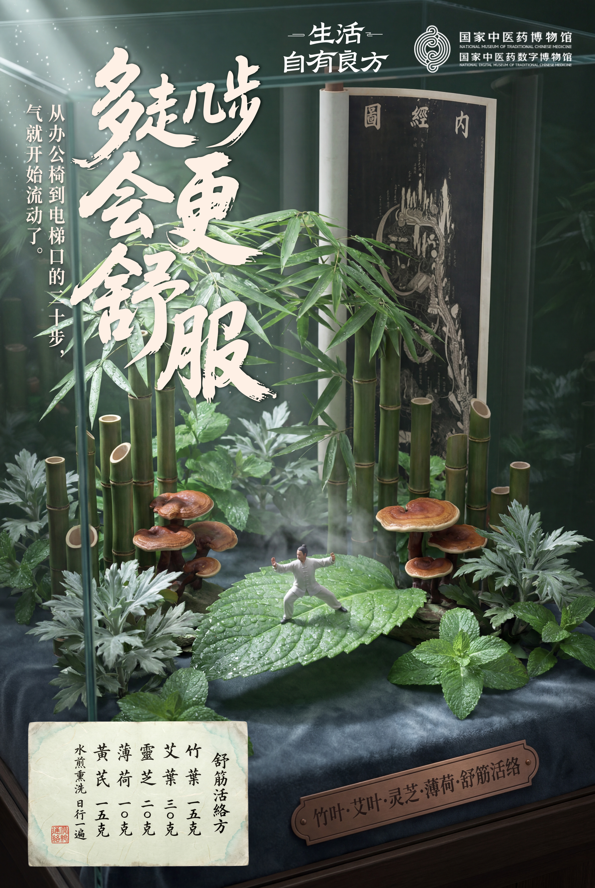

CULTURE / POSTER DESIGN
Everyday
rituals.
A four-part promotional poster concept for the National Museum of Traditional Chinese Medicine, exploring everyday life through emotions, sleep, nourishment and movement.

FOUR PERSPECTIVES
Life, seen
with care.
Four visual stories bring botanical textures, museum objects and everyday moments together.


